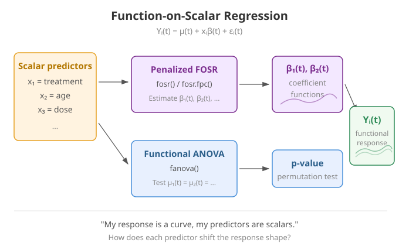
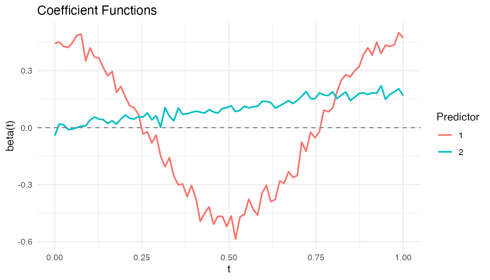
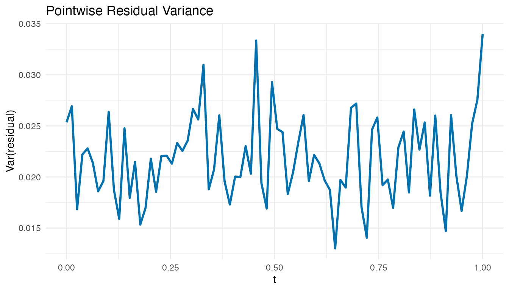
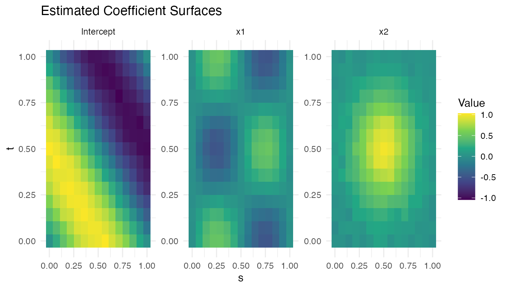

Function-on-Scalar Regression
Source:vignettes/articles/function-on-scalar.Rmd
function-on-scalar.RmdIntroduction
Function-on-scalar regression predicts a functional response from scalar predictors . This is the reverse of scalar-on-function regression: the response is a curve, not a number.
Typical questions:
- “How does the treatment shift the entire response curve?”
- “Do group means differ at every time point?”

Mathematical Framework
The function-on-scalar model is:
Each coefficient is a function describing how predictor modifies the response curve at each time point . The intercept is the mean response when all predictors are zero.
Penalized Estimation
Direct pointwise OLS at each
would produce coefficient estimates that are noisy and discontinuous.
fosr() imposes smoothness via a second-difference roughness
penalty:
where controls the trade-off between fidelity to the data and smoothness. The solution at each grid point is a ridge-type estimator:
Penalized FOSR (fosr)
fosr() estimates the coefficient functions
with an optional ridge penalty.
set.seed(42)
n <- 60
m <- 80
t_grid <- seq(0, 1, length.out = m)
# Two scalar predictors: treatment and age
treatment <- rep(c(0, 1), each = n/2)
age <- rnorm(n)
predictors <- cbind(treatment, age)
# Functional response depends on predictors
Y <- matrix(0, n, m)
for (i in 1:n) {
Y[i, ] <- sin(2 * pi * t_grid) +
treatment[i] * 0.5 * cos(2 * pi * t_grid) +
age[i] * 0.2 * t_grid +
rnorm(m, sd = 0.15)
}
fd_y <- fdata(Y, argvals = t_grid)
fosr_fit <- fosr(fd_y, predictors, lambda = 0.1)
print(fosr_fit)
#> Function-on-Scalar Regression
#> =============================
#> Number of observations: 60
#> Number of predictors: 2
#> Evaluation points: 80
#> R-squared: 0.6412
#> Lambda: 0.1The treatment coefficient should recover the simulated pattern, while the age coefficient should approximate the linear trend.
Visualizing Coefficient Functions
plot(fosr_fit)
Each panel shows one coefficient function . The shape reveals when during the functional domain each predictor has its strongest effect.
FPC-Based FOSR (fosr.fpc)
fosr.fpc() uses functional principal components instead
of penalization:
fosr_fpc_fit <- fosr.fpc(fd_y, predictors, ncomp = 5)
cat("FPC-based R-squared:", round(fosr_fpc_fit$r.squared, 4), "\n")
#> FPC-based R-squared: 0.6421The FPC-based approach avoids choosing but requires selecting the number of components. When the response curves have strong low-rank structure (most variance in a few FPCs), this approach is efficient and stable.
Functional ANOVA (fanova)
Functional ANOVA tests whether the mean functions of groups are equal:
Pointwise F-Statistic
At each grid point :
These are summarized into a global test statistic by integration:
Permutation Testing
Because the null distribution of
is intractable, fanova() uses a permutation approach:
- Compute the observed from the original data.
- For : randomly permute group labels and compute .
- The p-value is:
This makes the test exact (valid at any sample size) and assumption-free regarding the distribution of .
Example
set.seed(42)
n_per_group <- 25
m_a <- 80
t_a <- seq(0, 1, length.out = m_a)
# Three treatment groups with different mean functions
Y_anova <- matrix(0, 3 * n_per_group, m_a)
for (i in 1:n_per_group) {
Y_anova[i, ] <- sin(2 * pi * t_a) + rnorm(m_a, sd = 0.15)
Y_anova[n_per_group + i, ] <- sin(2 * pi * t_a) +
0.5 * cos(2 * pi * t_a) + rnorm(m_a, sd = 0.15)
Y_anova[2 * n_per_group + i, ] <- 2 * t_a - 1 + rnorm(m_a, sd = 0.15)
}
groups <- rep(1:3, each = n_per_group)
fd_anova <- fdata(Y_anova, argvals = t_a)
anova_result <- fanova(fd_anova, groups, n.perm = 500)
print(anova_result)
#> Functional ANOVA
#> ================
#> Number of groups: 3
#> Number of observations: 75
#> Global F-statistic: 577.3765
#> P-value: 0.001996
#> Permutations: 500A small p-value rejects the null hypothesis that all groups share the same mean function. In this simulation, the three groups have clearly different shapes (sine, sine + cosine, linear), so we expect strong rejection.
Visualizing Group Means
plot(anova_result)
The group mean curves show the estimated for each group. Where the curves separate most, the pointwise F-statistic is largest.
Model Diagnostics
After fitting a FOSR model, examine the residuals to check for misspecification. Large residuals concentrated at certain time points suggest the model misses structure there.
# Pointwise residual variance
resid_mat <- fosr_fit$residuals$data
resid_var <- apply(resid_mat, 2, var)
df_resid <- data.frame(t = t_grid, variance = resid_var)
ggplot(df_resid, aes(x = t, y = variance)) +
geom_line(color = "#0072B2", linewidth = 1) +
labs(title = "Pointwise Residual Variance",
x = "t", y = "Var(residual)")
Roughly constant residual variance across supports the model. Peaks indicate time points where the scalar predictors fail to capture the response variation, suggesting additional predictors or a more flexible model.
2D Function-on-Scalar Regression (fosr.2d)
When the functional response is a 2D surface rather than a curve , standard FOSR does not apply directly. Examples include:
- Spatial-temporal fields — temperature or precipitation measured on a spatial grid over time.
- Brain imaging — cortical activation surfaces from fMRI or EEG.
- Environmental monitoring — pollutant concentrations over a geographic region.
fosr.2d() extends the penalized FOSR framework to
surface-valued responses.
Mathematical Model
The 2D function-on-scalar model is:
Each coefficient is now a coefficient surface describing how predictor modifies the response across the entire 2D domain. The intercept is the mean surface when all predictors are zero.
Anisotropic Penalization
The two grid directions may require different amounts of smoothing.
fosr.2d() supports separate penalties
and
for the
and
dimensions respectively. This anisotropic penalization is important when
the response varies more rapidly in one direction than the other — for
example, spatial fields that are smooth geographically but fluctuate
quickly over time.
Worked Example
We simulate
observations of a surface response on a
grid with two scalar predictors: a continuous predictor x1
and a binary predictor x2.
set.seed(42)
n_2d <- 40
m1 <- 15; m2 <- 15
s_grid <- seq(0, 1, length.out = m1)
t_2d_grid <- seq(0, 1, length.out = m2)
# Two scalar predictors
x1 <- rnorm(n_2d)
x2 <- rbinom(n_2d, 1, 0.5)
pred_2d <- cbind(x1, x2)
# True coefficient surfaces
beta1_true <- outer(s_grid, t_2d_grid, function(s, t)
0.5 * sin(2 * pi * s) * cos(2 * pi * t))
beta2_true <- outer(s_grid, t_2d_grid, function(s, t)
exp(-((s - 0.5)^2 + (t - 0.5)^2) / 0.1))
# Generate surface responses (each row is a flattened m1*m2 surface)
Y_2d <- matrix(0, n_2d, m1 * m2)
for (i in 1:n_2d) {
surface <- sin(pi * outer(s_grid, t_2d_grid, "+")) +
x1[i] * beta1_true + x2[i] * beta2_true
Y_2d[i, ] <- as.vector(surface) + rnorm(m1 * m2, sd = 0.1)
}
fd_2d <- fdata(Y_2d)
fit_2d <- fosr.2d(fd_2d, pred_2d, s_grid, t_2d_grid,
lambda.s = 0.01, lambda.t = 0.01)
print(fit_2d)
#> 2D Function-on-Scalar Regression
#> Grid: 15 x 15
#> Predictors: 2
#> R-squared: 0.7596
#> Lambda (s, t): 0.01 , 0.01Prediction on New Data
Use predict() to obtain fitted surfaces for new
observations:
Visualizing Coefficient Surfaces
Each estimated coefficient
is stored as a flattened row in fit_2d$beta$data. To
visualize, reshape to the original
grid and plot as a heatmap.
# Extract and reshape coefficient surfaces for visualization
coef_list <- list(
data.frame(
s = rep(s_grid, m2), t = rep(t_2d_grid, each = m1),
value = as.vector(matrix(fit_2d$intercept$data[1, ], m1, m2)),
coefficient = "Intercept"
),
data.frame(
s = rep(s_grid, m2), t = rep(t_2d_grid, each = m1),
value = as.vector(matrix(fit_2d$beta$data[1, ], m1, m2)),
coefficient = "x1"
),
data.frame(
s = rep(s_grid, m2), t = rep(t_2d_grid, each = m1),
value = as.vector(matrix(fit_2d$beta$data[2, ], m1, m2)),
coefficient = "x2"
)
)
df_coef <- do.call(rbind, coef_list)
ggplot(df_coef, aes(x = .data$s, y = .data$t, fill = .data$value)) +
geom_tile() +
facet_wrap(~ .data$coefficient, scales = "free") +
scale_fill_viridis_c() +
labs(title = "Estimated Coefficient Surfaces",
x = "s", y = "t", fill = "Value")
The x1 surface should recover the sinusoidal pattern
,
while the x2 surface should approximate the Gaussian bump
centred at
.
When to Use Each Method
| Method | Function | Tuning | Best when |
|---|---|---|---|
| Penalized FOSR | fosr() |
Smooth coefficient functions, large | |
| FPC-Based FOSR | fosr.fpc() |
(# components) | Low-rank response structure |
| Functional ANOVA | fanova() |
(# permutations) | Testing group differences |
| 2D Penalized FOSR | fosr.2d() |
Surface responses on 2D grids |
See Also
-
vignette("articles/scalar-on-function")— when the response is a scalar -
vignette("articles/functional-mixed-models")— repeated measures withfmm() -
vignette("articles/example-canadian-weather")— real-data FANOVA + FOSR: regional climate patterns
References
- Ramsay, J.O. and Silverman, B.W. (2005). Functional Data Analysis, 2nd ed. Springer.
- Reiss, P.T. and Ogden, R.T. (2007). Functional Principal Component Regression and Functional Partial Least Squares. Journal of the American Statistical Association, 102(479), 984–996.
- Cuevas, A., Febrero, M., and Fraiman, R. (2004). An anova test for functional data. Computational Statistics & Data Analysis, 47(1), 111–122.